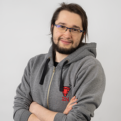
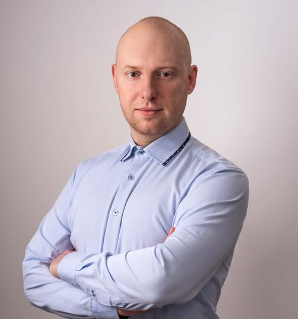

08.04.2026 ·
Miejsce: Klub GWINT
PrograMeetstok 🤖
Spotkajmy się i wymieńmy doświadczeniami!
2 prezentacje + 7 lightning talków z przykładami użycia agentów w waszych firmach i projektach.
Nie przychodzimy do was z odpowiedziami - za wcześnie, aby się oszukiwać i wdrażać idealne rozwiązania. Ale każdy z nas szuka optymalnego flow pracy.
Każdy z nas ma już jakieś doświadczenia i przemyślenia. Skonfrontujmy nasze doświadczenia i porozmawiajmy o tym, co gdzie działa.
Rezerwujcie datę 08.04.2026 i widzimy się w klubie GWINT, ul. Zwierzyniecka 10 15-351 Białystok.
Chcesz pokazać co u was działa?
Pokaż w 10 minut swoją konfigurację agentów, opowiedz co najczęściej się sprawdza i co jest kluczowe, żeby odpowiednio działało.
6 slotów na lightning talki - zgłoś się, zanim się zapełnią!
Prelegenci 🎙️

Współczesne LLM-y mogą wielokrotnie zwiększyć naszą produktywność na różne sposoby, każdy ma swój proces, lepszy, gorszy, nowszy, starszy. To co ma je łączyć niezależnie od tego, jakie są to wykonanie za nas aspektów pracy, na które traciliśmy zbyt wiele czasu, ale częściej zdaje się je łączyć bardziej negatywny aspekt – dług poznawczy. Co wiemy o Krzyśku? Sporo, ale skupimy się na tym, że na scenie jest dosyć bezpośredni – co często triggeruje burzliwe dyskusje po prezentacji. A w sumie o to nam chodzi. Co wiemy o jego temacie tj. długu kognitywnym? Że to temat, który jest coraz częściej 'na językach', ale naszym zdaniem wciąż za rzadko.
Więcej o Krzysztofie
Specjalista architektury oprogramowania i światka JavaScript, związany z branżą od 2007. Posiadacz prestiżowego tytułu Microsoft MVP. Architekt, developer, konsultant, trener, spiker. Ma szerokie doświadczenie w pracy z systemami, tworzył zarówno systemy korporacyjne, jak i projekty dla startupów. Przeprowadził setki komercyjnych szkoleń i konsultacji. Blisko i kodu, i „biznesu”. Ekspert w bestsellerowym szkoleniu online Architektura Na Froncie. Instruktor programu Developer Jutra – bestseller, prawie 2 000 przeszkolonych osób! Najbardziej kompleksowe szkolenie z architektury, full-stacku i AI dla programistów na polskim rynku. Od początku AI-rewolucji śledzi możliwości najnowszych narzędzi i optymalizuje ich zastosowanie w praktyce.
Więcej o Tomaszu
W ciągu ostatniego roku jego rola ewoluowała od pisania kodu w kierunku weryfikacji rozwiązań generowanych przez AI, projektowania architektury oraz aktywnego udziału w procesach product teamowych. Na spotkaniu podzieli się praktycznym spojrzeniem na to, jak AI zmieniło nie tylko jego warsztat jako dewelopera, ale i zakres odpowiedzialności w zespole.
Więcej o Łukaszu
Wielbiciel rubiego, automatyzacji, neovima (jak i twórca pluginów do niego) oraz wszystkiego co da się zrobić w terminalu. Propagator idei Personalized Development Environment i specjalista w wyciąganiu z narzędzi maksimum ich możliwości. Z wykształcenia biolog, dzięki czemu dysponuje wszechstronną wiedzą do radzenia sobie z bugami. Kaletnik amator.
Więcej o Rafale
CTO w Pagepro od 2016 roku – przeszedł drogę od juniora do obecnej roli. Na co dzień bada, jak mądrze wykorzystywać AI w procesach zespołu i aktywnie uczestniczy w projektach. Po godzinach trenuje triathlon. Opowie o tym, jak zamienić zwykłe repo w żywą bazę wiedzy gotową na AI – na podstawie realnego flow, które u nich działa i samo się doskonali.
Więcej o Jakubie
Przez 8 lat w Instapage, aktualnie jako Principal DevOps – człowiek od utrzymywania aplikacji, który postanowił przestać narzekać i zacząć działać. Twórca onREC i realizator transmisji na żywo. Były karateka, aktualnie entuzjasta teatru improwizowanego. Wierzy, że w erze AI wystarczający jest w zasięgu każdego – i zamierza to udowodnić na własnym przykładzie. Spoiler: dużo nie wyszło, ale infra jest w miarę spoko.
Więcej o Mateuszu
Inżynier, który rok temu zamienił stabilną pracę 9-to-5 na engineering 5-to-9. Twórca https://gomodel.enterpilot.io/ – Open-Source AI Gateway. Słyszałeś o ataku na LiteLLM? To dobry punkt wyjścia do rozmowy o tym, czym jest AI Gateway i jakie problemy rozwiązuje.
Więcej o Jakubie


Skupią się na przedstawieniu kilku zastosowań LLM w firmie, ilustrując je przypadkiem opartym na analizie dokumentacji technicznej driverów silników krokowych. Pokażą, jak dzięki LLM można w krótkim czasie porównywać elementy elektroniczne stanowiące nierozerwalną część pracy nad oprogramowaniem embedded.

CTO w BlueRider.Software, gdzie łączy perspektywę biznesową z głębokim doświadczeniem technicznym, od architektury systemów, przez DevOps, po wdrożenia AI w środowiskach produkcyjnych (często w branżach regulowanych, takich jak healthcare i legal). Zaprezentuje na przykładzie lekkiego serwisu w FastAPI, jak zbudować proxy między aplikacją a modelem LLM, które automatycznie chroni dane wrażliwe (PII) w czasie rzeczywistym.
Więcej o SebastianieSponsorzy 💰

Twoja firma ma ochotę wesprzeć event?
Miejsce, catering, promo, wsparcie finansowe - każda forma pomocy się liczy.
Zostaw kontakt, odezwiemy się i pogadamy o szczegółach.
Czym jest Programistok?
Programistok to społeczność i idea.
Społeczność składająca się z programistów, project managerów, testerów, założycieli firm* oraz wszystkich innych ambitnych osób z szeroko pojętego IT. To ludzie, firmy, uczelnie i organizacje.
Naszą wspólną misją jest integracja Podlaskiej społeczności IT oraz wyraźne zaznaczenie, że podlaskie IT ma się dobrze i jest jednym z wyraźniejszych punktów na mapie Polski i Europy, jeśli chodzi o zakres kompetencji i portfolio.
Technologicznie agnostyczne prezentacje skupiające się na wyzwaniach architektur systemowych czy zmian w branży od lat przyciągają do naszej społeczności największe umysły technologiczne na Podlasiu (i nie tylko).
Kolejnym celem naszej społeczności jest integracja środowiska technologicznego z lokalnym biznesem, który dzięki dostępowi do szerokiego grona ekspertów będzie w stanie odnaleźć się w dynamicznie zmieniającym się świecie i konkurować zarówno z rozwijającym się Wschodem, jak i pełnym kapitału Zachodem.
*„Założyciele firm” — określenie stosowane na Podlasiu, będące synonimem słowa „Founderzy”.